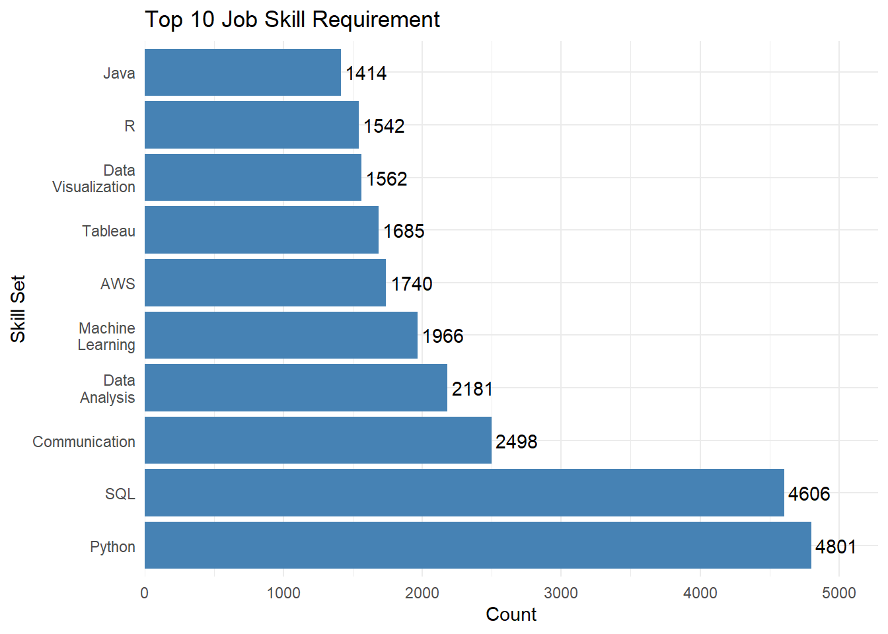
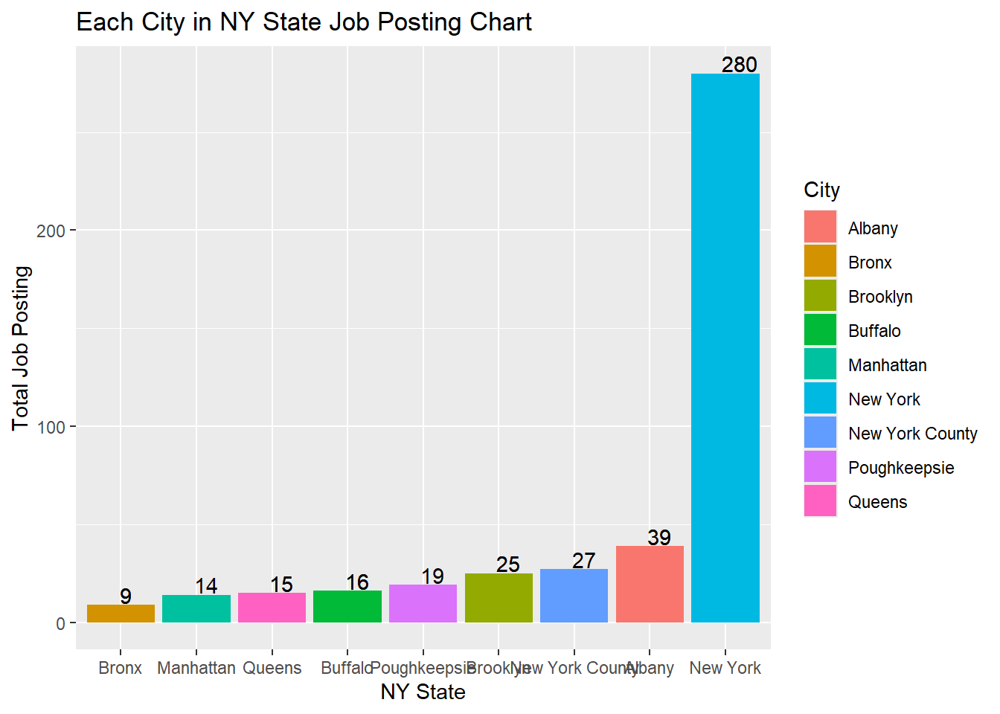
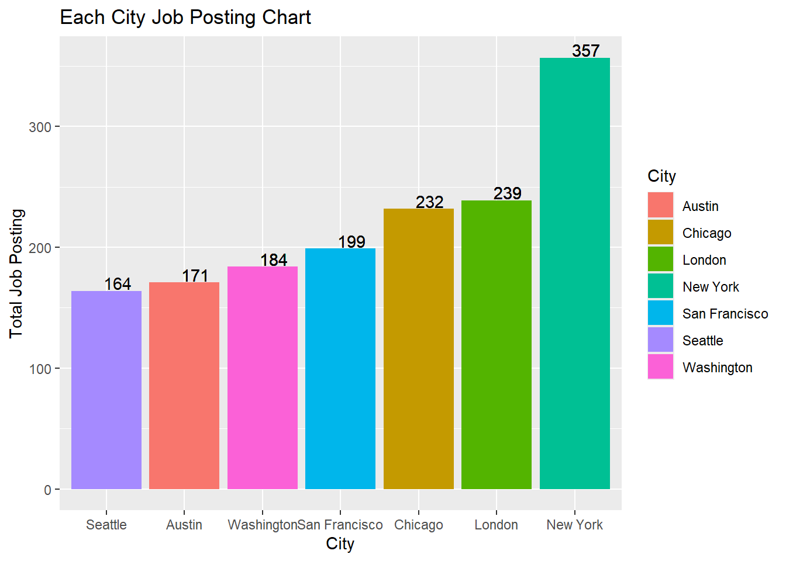
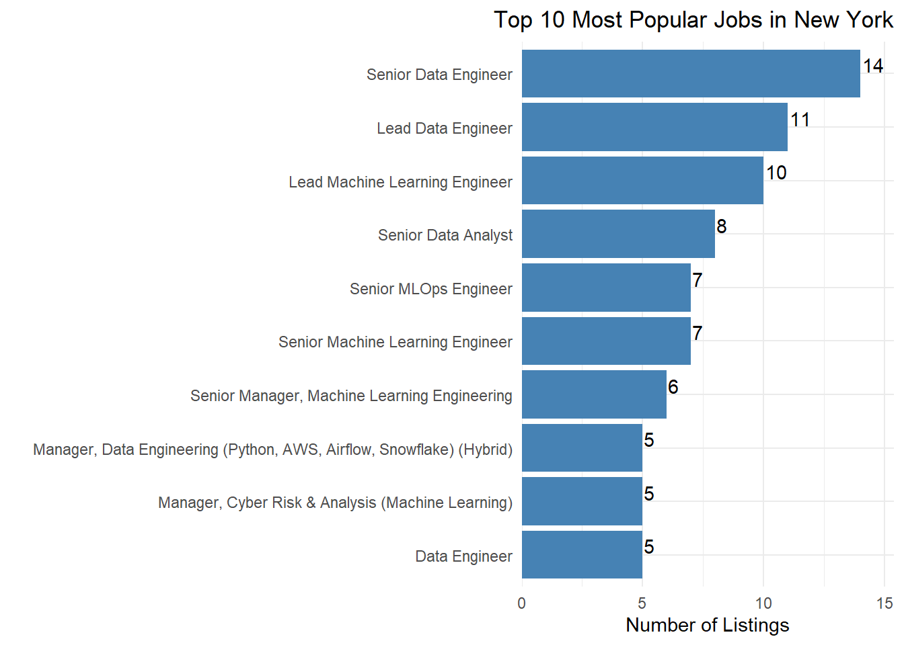

library(dplyr)
Attaching package: 'dplyr'The following objects are masked from 'package:stats':
filter, lagThe following objects are masked from 'package:base':
intersect, setdiff, setequal, unionlibrary(tidyr)
library(ggplot2)Using data, investigate the question:
Which data science skills are most valued?Dataset: https://www.kaggle.com/datasets/asaniczka/data-science-job-postings-and-skills?select=job_postings.csv
LinkedIn is a popular professional networking platform with millions of job postings across various industries.
This dataset provides a raw dump of data science-related job postings collected from LinkedIn. It includes information about job titles, companies, locations, search parameters, and other relevant details.
The main objective of this dataset is not only to provide insights into the data science job market and the skills required by professionals in this field but also to offer users an opportunity to practice their data cleaning skills.
The dataset used in this project was obtained from Kaggle: Data Science Job Postings and Skills. It contains job postings collected from LinkedIn and includes information such as job titles, company names, locations, and required skills for data-related positions. The dataset was downloaded as CSV files (e.g., job_postings.csv) and stored locally for analysis using R and RStudio.
Before analysis, the dataset required preprocessing to ensure data quality. This process included removing missing or duplicate records, standardizing column names, and cleaning text fields such as job titles and skill lists. Additional transformations were performed to convert certain variables into appropriate formats and to extract relevant keywords for skill analysis. These steps ensured the dataset was consistent and ready for further analysis.
Exploratory Data Analysis (EDA) was conducted to better understand the structure and patterns within the dataset. Summary statistics and frequency counts were used to examine common job titles, locations, and skills mentioned in job postings. The analysis also explored relationships between variables, such as the distribution of skills across different data science roles and geographic locations.
Data visualization techniques were used to present insights in a clear and interpretable way. Charts such as bar plots, word frequency charts, and geographic comparisons were used to highlight the most frequently requested skills and job roles. Visualizations helped identify trends in the data science job market and allowed us to compare skill demand across different job categories and locations.
Which skills are most frequently required in data science job postings?
How do the most in-demand skills vary across different data-related roles?
Is there a correlation between job location and the skills required for data science positions?
Can we identify patterns or trends in skill demand that could inform career development or hiring strategies?
The analysis will identify the most in-demand skills by analyzing keyword frequency across different job postings and visualizing the most promising skills across various data-related roles. We will also explore whether there is any correlation between job location and the required skill sets, providing insights into geographic trends in data science skill demand.
Teams / Zoom
Github
Rstudio
library(dplyr)
Attaching package: 'dplyr'The following objects are masked from 'package:stats':
filter, lagThe following objects are masked from 'package:base':
intersect, setdiff, setequal, unionlibrary(tidyr)
library(ggplot2)posting_url <- "https://raw.githubusercontent.com/dyc-sps/SPS_DATA607_Week8/refs/heads/main/job_postings.csv"
skill_url<-"https://raw.githubusercontent.com/dyc-sps/SPS_DATA607_Week8/refs/heads/main/job_skills.csv"df_posting <-read.csv(posting_url)
df_skill <- read.csv(skill_url)
head(df_posting) job_link
1 https://www.linkedin.com/jobs/view/senior-machine-learning-engineer-at-jobs-for-humanity-3804053819
2 https://www.linkedin.com/jobs/view/principal-software-engineer-ml-accelerators-at-aurora-3703455068
3 https://www.linkedin.com/jobs/view/senior-etl-data-warehouse-specialist-at-adame-services-llc-3765023888
4 https://www.linkedin.com/jobs/view/senior-data-warehouse-developer-architect-at-morph-enterprise-3794602483
5 https://www.linkedin.com/jobs/view/lead-data-engineer-at-dice-3805948138
6 https://www.linkedin.com/jobs/view/senior-data-engineer-at-university-of-chicago-3798206502
last_processed_time last_status got_summary got_ner
1 2024-01-21 08:08:48.031964+00 Finished NER t t
2 2024-01-20 04:02:12.331406+00 Finished NER t t
3 2024-01-21 08:08:31.941595+00 Finished NER t t
4 2024-01-20 15:30:55.796572+00 Finished NER t t
5 2024-01-21 08:08:58.312124+00 Finished NER t t
6 2024-01-21 07:14:11.378097+00 Finished NER t t
is_being_worked job_title
1 f Senior Machine Learning Engineer
2 f Principal Software Engineer, ML Accelerators
3 f Senior ETL Data Warehouse Specialist
4 f Senior Data Warehouse Developer / Architect
5 f Lead Data Engineer
6 f Senior Data Engineer
company job_location first_seen search_city
1 Jobs for Humanity New Haven, CT 2024-01-14 East Haven
2 Aurora San Francisco, CA 2024-01-14 El Cerrito
3 Adame Services LLC New York, NY 2024-01-14 Middletown
4 Morph Enterprise Harrisburg, PA 2024-01-12 Lebanon
5 Dice Plano, TX 2024-01-14 McKinney
6 University of Chicago Chicago, IL 2024-01-14 East Chicago
search_country search_position job_level job_type
1 United States Agricultural-Research Engineer Mid senior Onsite
2 United States Set-Key Driver Mid senior Onsite
3 United States Technical Support Specialist Associate Onsite
4 United States Architect Mid senior Onsite
5 United States Maintenance Data Analyst Mid senior Onsite
6 United States Data Base Administrator Mid senior Onsitehead(df_skill) job_link
1 https://www.linkedin.com/jobs/view/senior-machine-learning-engineer-at-jobs-for-humanity-3804053819
2 https://www.linkedin.com/jobs/view/principal-software-engineer-ml-accelerators-at-aurora-3703455068
3 https://www.linkedin.com/jobs/view/senior-etl-data-warehouse-specialist-at-adame-services-llc-3765023888
4 https://www.linkedin.com/jobs/view/senior-data-warehouse-developer-architect-at-morph-enterprise-3794602483
5 https://www.linkedin.com/jobs/view/lead-data-engineer-at-dice-3805948138
6 https://www.linkedin.com/jobs/view/senior-data-engineer-at-university-of-chicago-3798206502
job_skills
1 Machine Learning, Programming, Python, Scala, Java, Data Engineering, Distributed Computing, Statistical Modeling, Optimization, Data Pipelines, Cloud Computing, DevOps, Software Development, Data Gathering, Data Preparation, Data Visualization, Machine Learning Frameworks, scikitlearn, PyTorch, Dask, Spark, TensorFlow, Distributed File Systems, Multi node Database Paradigms, Open Source ML Software, Responsible AI, Explainable AI
2 C++, Python, PyTorch, TensorFlow, MXNet, CUDA, OpenCL, OpenVX, Halide, SIMD programming models, MLspecific accelerators, Linux/unix environments, Deep learning frameworks, Computer vision deep learning models, ML software and hardware technology, Inference on edge platforms, Cloud ML training pipelines, HPC experience, Performance troubleshooting, Profiling, Roofline model, Analytical skills, Communication skills
3 ETL, Data Integration, Data Transformation, Data Warehousing, Business Intelligence, Data Modeling, Data Architecture, Data Quality, Data Validation, Data Cleansing, Performance Optimization, Performance Tuning, Troubleshooting, Documentation, Reporting, Data Analysis, Collaboration, Communication, SQL, Informatica, Talend, Apache NiFi, AWS Redshift, Azure SQL Data Warehouse, Financial/Banking, CloudBased Data Platforms, Regulatory Compliance
4 Data Lakes, Data Bricks, Azure Data Factory Pipelines, Spark, Python, Business Intelligence, Data Warehouse, SQL Server, Azure, ETL/ELT, SQL Server Integration Services, TSQL, Data Formatting, Data Capture, Data Search, Data Retrieval, Data Extraction, Data Classification, Information Filtering, Data Mining Architectures, Modeling Standards, Reporting, Data Analysis Methodologies, Data Engineering, Database File Systems Optimization, API's, Analytics as a Service, Relational Databases, Dimensional Databases, Entity Relationships, Data Warehousing, Facts, Dimensions, Star Schema Concepts, Star Schema Terminology, Project Management, Organizational Skills, Collaboration, Communication, Technical Presentaion Skills, 12+ Years of Relevant Experience
5 Java, Scala, Python, RDBMS, NoSQL, Redshift, Snowflake, Unit testing, Agile engineering, Big data technologies, Cloud computing (AWS Microsoft Azure Google Cloud), Distributed data/computing tools (MapReduce Hadoop Hive EMR Kafka Spark Gurobi MySQL), Realtime data and streaming applications, NoSQL implementation (Mongo Cassandra), Data warehousing (Redshift Snowflake), UNIX/Linux, Shell scripting
6 Data Warehouse (DW), Extract/Transform/Load (ETL), Oracle, VPD, MuleSoft, Cloudera Apache Hadoop Ecosystem, Hadoop, Java, Python, R, AI/ML, Predictive Analytics, Business Objects, Tableau, OBIA/OBIEE, Oracle Cloud Financials, Power Designer, Erwin, UNIX, ODBC, JDBC, Perl DBI, Shell Scripting, PL/SQL, SQL Developer, SQL Plus, SQL Loader, TOAD, Data Profiling, SourceTarget Mapping, Transformations, Business Rules, OWB, ODI, Data Stage, Informatica, SQL, Unix Server, Windows Workstation, Windows Server, Microsoft Office, Excel, Analytic Skills, ProblemSolving, Communication Skills, Teamwork, Accountability, Attention to Detail, Accuracycolnames(df_posting) [1] "job_link" "last_processed_time" "last_status"
[4] "got_summary" "got_ner" "is_being_worked"
[7] "job_title" "company" "job_location"
[10] "first_seen" "search_city" "search_country"
[13] "search_position" "job_level" "job_type" colnames(df_skill)[1] "job_link" "job_skills"Creating a new dataframe that separates each skill from each individual listing into a new column
#library(tidyr)
df_skill_separate <- separate(df_skill, job_skills, into = paste0("col", 1:224), sep = ",", fill = "right")The goal for the following code was to have a skill_count required from each job listing. Upon creating this column we found the data to have more than 226 columns or rather “226 skills required”. This was being created from an outlier. There are a few job listings which have more than “100 skills required” in their job listing leading to the immense amount of columns. We ended up ignoring the following code and refining our approach.
#library(dplyr)
df_skill_separate <- df_skill_separate %>%
mutate(skill_count = rowSums(!is.na(.)))This is our refined approach towards getting the frequency of each job-skill for all job listings. We take the dataframe and convert it into a long vector and convert everything into text. We split job skills into seperate string statements with strplit(), splitting at each comma. The data is cleaned up from any empty cells which are represented by empty strings using vals[vals != ““]. We create a new dataframe skill_df and use it for plotting.
vals <- unlist(strsplit(as.character(unlist(df_skill)), ","))
vals <- trimws(vals)
vals <- vals[vals != ""]
skill_df <- as.data.frame(sort(table(vals), decreasing = TRUE))This plot visualizes the top 10 skill requirements by frequency after extracting and filtering data from the job_skills column.
head(skill_df) vals Freq
1 Python 4801
2 SQL 4606
3 Communication 2498
4 Data Analysis 2181
5 Machine Learning 1966
6 AWS 1740#library(ggplot2)
ggplot(skill_df[1:10, ], aes(x = vals, y = Freq)) +
geom_col(fill ="steelblue")+
scale_x_discrete(labels = function(x) gsub(" ", "\n", x))+
geom_text(aes(label = Freq), hjust = -0.1) + # labels on right side
coord_flip() + # horizontal bars
labs(x = "Skill Set", y = "Count", title = "Top 10 Job Skill Requirement") +
scale_y_continuous(expand = expansion(mult = c(0, 0.1)))+
theme_minimal()
summary(skill_df) vals Freq
Python : 1 Min. : 1.000
SQL : 1 1st Qu.: 1.000
Communication : 1 Median : 1.000
Data Analysis : 1 Mean : 3.752
Machine Learning: 1 3rd Qu.: 1.000
AWS : 1 Max. :4801.000
(Other) :87184 str(skill_df)'data.frame': 87190 obs. of 2 variables:
$ vals: Factor w/ 87190 levels "Python","SQL",..: 1 2 3 4 5 6 7 8 9 10 ...
$ Freq: int 4801 4606 2498 2181 1966 1740 1685 1562 1542 1414 ...With the following code we are joining the 2 dataframes in order to observe location with job skills and draw some conclusions
#library(dplyr)
df_combined <- inner_join(df_posting, df_skill, by = "job_link")
head(df_combined) job_link
1 https://www.linkedin.com/jobs/view/senior-machine-learning-engineer-at-jobs-for-humanity-3804053819
2 https://www.linkedin.com/jobs/view/principal-software-engineer-ml-accelerators-at-aurora-3703455068
3 https://www.linkedin.com/jobs/view/senior-etl-data-warehouse-specialist-at-adame-services-llc-3765023888
4 https://www.linkedin.com/jobs/view/senior-data-warehouse-developer-architect-at-morph-enterprise-3794602483
5 https://www.linkedin.com/jobs/view/lead-data-engineer-at-dice-3805948138
6 https://www.linkedin.com/jobs/view/senior-data-engineer-at-university-of-chicago-3798206502
last_processed_time last_status got_summary got_ner
1 2024-01-21 08:08:48.031964+00 Finished NER t t
2 2024-01-20 04:02:12.331406+00 Finished NER t t
3 2024-01-21 08:08:31.941595+00 Finished NER t t
4 2024-01-20 15:30:55.796572+00 Finished NER t t
5 2024-01-21 08:08:58.312124+00 Finished NER t t
6 2024-01-21 07:14:11.378097+00 Finished NER t t
is_being_worked job_title
1 f Senior Machine Learning Engineer
2 f Principal Software Engineer, ML Accelerators
3 f Senior ETL Data Warehouse Specialist
4 f Senior Data Warehouse Developer / Architect
5 f Lead Data Engineer
6 f Senior Data Engineer
company job_location first_seen search_city
1 Jobs for Humanity New Haven, CT 2024-01-14 East Haven
2 Aurora San Francisco, CA 2024-01-14 El Cerrito
3 Adame Services LLC New York, NY 2024-01-14 Middletown
4 Morph Enterprise Harrisburg, PA 2024-01-12 Lebanon
5 Dice Plano, TX 2024-01-14 McKinney
6 University of Chicago Chicago, IL 2024-01-14 East Chicago
search_country search_position job_level job_type
1 United States Agricultural-Research Engineer Mid senior Onsite
2 United States Set-Key Driver Mid senior Onsite
3 United States Technical Support Specialist Associate Onsite
4 United States Architect Mid senior Onsite
5 United States Maintenance Data Analyst Mid senior Onsite
6 United States Data Base Administrator Mid senior Onsite
job_skills
1 Machine Learning, Programming, Python, Scala, Java, Data Engineering, Distributed Computing, Statistical Modeling, Optimization, Data Pipelines, Cloud Computing, DevOps, Software Development, Data Gathering, Data Preparation, Data Visualization, Machine Learning Frameworks, scikitlearn, PyTorch, Dask, Spark, TensorFlow, Distributed File Systems, Multi node Database Paradigms, Open Source ML Software, Responsible AI, Explainable AI
2 C++, Python, PyTorch, TensorFlow, MXNet, CUDA, OpenCL, OpenVX, Halide, SIMD programming models, MLspecific accelerators, Linux/unix environments, Deep learning frameworks, Computer vision deep learning models, ML software and hardware technology, Inference on edge platforms, Cloud ML training pipelines, HPC experience, Performance troubleshooting, Profiling, Roofline model, Analytical skills, Communication skills
3 ETL, Data Integration, Data Transformation, Data Warehousing, Business Intelligence, Data Modeling, Data Architecture, Data Quality, Data Validation, Data Cleansing, Performance Optimization, Performance Tuning, Troubleshooting, Documentation, Reporting, Data Analysis, Collaboration, Communication, SQL, Informatica, Talend, Apache NiFi, AWS Redshift, Azure SQL Data Warehouse, Financial/Banking, CloudBased Data Platforms, Regulatory Compliance
4 Data Lakes, Data Bricks, Azure Data Factory Pipelines, Spark, Python, Business Intelligence, Data Warehouse, SQL Server, Azure, ETL/ELT, SQL Server Integration Services, TSQL, Data Formatting, Data Capture, Data Search, Data Retrieval, Data Extraction, Data Classification, Information Filtering, Data Mining Architectures, Modeling Standards, Reporting, Data Analysis Methodologies, Data Engineering, Database File Systems Optimization, API's, Analytics as a Service, Relational Databases, Dimensional Databases, Entity Relationships, Data Warehousing, Facts, Dimensions, Star Schema Concepts, Star Schema Terminology, Project Management, Organizational Skills, Collaboration, Communication, Technical Presentaion Skills, 12+ Years of Relevant Experience
5 Java, Scala, Python, RDBMS, NoSQL, Redshift, Snowflake, Unit testing, Agile engineering, Big data technologies, Cloud computing (AWS Microsoft Azure Google Cloud), Distributed data/computing tools (MapReduce Hadoop Hive EMR Kafka Spark Gurobi MySQL), Realtime data and streaming applications, NoSQL implementation (Mongo Cassandra), Data warehousing (Redshift Snowflake), UNIX/Linux, Shell scripting
6 Data Warehouse (DW), Extract/Transform/Load (ETL), Oracle, VPD, MuleSoft, Cloudera Apache Hadoop Ecosystem, Hadoop, Java, Python, R, AI/ML, Predictive Analytics, Business Objects, Tableau, OBIA/OBIEE, Oracle Cloud Financials, Power Designer, Erwin, UNIX, ODBC, JDBC, Perl DBI, Shell Scripting, PL/SQL, SQL Developer, SQL Plus, SQL Loader, TOAD, Data Profiling, SourceTarget Mapping, Transformations, Business Rules, OWB, ODI, Data Stage, Informatica, SQL, Unix Server, Windows Workstation, Windows Server, Microsoft Office, Excel, Analytic Skills, ProblemSolving, Communication Skills, Teamwork, Accountability, Attention to Detail, Accuracy#library(dplyr)
df_localtion_level <- df_combined %>%
group_by(job_location, job_level) %>%
summarise(Count = n(), .groups = "drop") %>%
arrange(job_location, desc(Count))
#df_localtion_level <- separate(df_localtion_level, job_location, into = paste0("col", 4:6), sep = ",", fill = "right")
df_localtion_level <- separate(df_localtion_level, job_location, into = c("City","State","Country"), sep = ",", fill = "right")
#trim out all spaces
df_localtion_level <- df_localtion_level %>%
mutate(across(where(is.character), trimws))df_localtion_level %>%
filter(State=="NY")%>%
group_by(City) %>%
mutate(city_total = sum(Count)) %>%
ungroup() %>%
arrange(desc(city_total)) %>%
slice_head(n = 15)%>%
ggplot(aes(x = reorder(City, city_total), y = city_total, fill=City)) +
geom_text(aes(label = city_total),hjust = 0.1, vjust = -0.1)+
#coord_flip() +
labs(x = "NY State", y = "Total Job Posting", title = "Each City in NY State Job Posting Chart") +
geom_col(position = "dodge")
df_localtion_level %>%
#filter(State=="NY")%>%
group_by(City) %>%
mutate(city_total = sum(Count)) %>%
ungroup() %>%
arrange(desc(city_total)) %>%
slice_head(n = 20)%>%
ggplot(aes(x = reorder(City, city_total), y = city_total, fill=City)) +
geom_text(aes(label = city_total),hjust = 0.1, vjust = -0.1)+
#coord_flip() +
labs(x = "City", y = "Total Job Posting", title = "Each City Job Posting Chart") +
geom_col(position = "dodge")
The Following code was designed to display the top 10 most popular jobs in New York based on the frequency they were posted. This is heavily based on the exact wording of the job title as provided by the linked in posting. Based on this we can see that Senior Data Engineer had the most postings and the word “Engineer” appears frequently in the job listings.
# Step 1 - create the top 10 separately first
ny_top10 <- df_combined %>%
filter(grepl("NY", job_location)) %>%
count(job_title, sort = TRUE) %>%
slice(1:10)
# Step 2 - check it looks right before plotting
print(ny_top10) job_title n
1 Senior Data Engineer 14
2 Lead Data Engineer 11
3 Lead Machine Learning Engineer 10
4 Senior Data Analyst 8
5 Senior MLOps Engineer 7
6 Senior Machine Learning Engineer 7
7 Senior Manager, Machine Learning Engineering 6
8 Data Engineer 5
9 Manager, Cyber Risk & Analysis (Machine Learning) 5
10 Manager, Data Engineering (Python, AWS, Airflow, Snowflake) (Hybrid) 5# Step 3 - plot only after confirming step 2 looks correct
ggplot(ny_top10, aes(x = reorder(job_title, n), y = n)) +
geom_bar(stat = "identity", fill = "steelblue") +
geom_text(aes(label = n),hjust = -0.1, vjust = -0.1)+
scale_y_continuous(expand = expansion(mult = c(0, 0.1)))+
coord_flip() +
labs(
title = "Top 10 Most Popular Jobs in New York",
x = "",
y = "Number of Listings"
) +
theme_minimal()+
theme(plot.title = element_text(hjust = 1))
The most notable part of our data analysis can be seen in the ggplot created for the skill set and the frequency of each skill set over 12,217 job postings on LinkedIn for 2024. Looking at the top 10 most in demand skills we can see that python and SQL fill the top 2 spots in that order. These technical skills are in demand with almost 4,800 mentions for each one. Most suprisngly , communication is the third most in demand skill in the 12,217 job listings. This speaks a-lot to the type of work a data scientist does, they aren’t just creating models and displaying data. The graphs and data have to be explained to the consumer and to ones co-workers. The analysis of the data shows a balance between technical skills and soft-skills needed in the marketplace. R as a technical skill sits much lower than Python which can be attributed to the popularity and power of Python in today’s market especially with libraries such as Pandas.